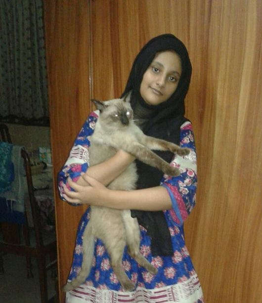

History
Rainbow Loom was created by Cheong Choon Ng, a Malaysian immigrant of Chinese descent who came to the United States in 1991 to attend Wichita State University, where he earned a graduate degree in mechanical engineering. He was employed as a crash-test engineer for Nissan Motor Company in 2010. He conceived the idea of a toy loom for rubber-band crafting after seeing his young daughters make rubber-band bracelets. He tried to show them how they could link the rubber bands together but was unsuccessful, so he stuck a scrapboard with multiple rows of pushpins on which the bands could be linked more easily.
The bracelets became popular with the neighborhood children, and his daughter suggested that he sell them. He spent six months developing the loom kit and designed 28 different versions. His prototype, which he called Twistz Bandz, used a wooden board, pushpins, and dental hooks. He invested $10,000 and found a factory in China to manufacture the parts, which he and his wife assembled in their home in June 2011. Ng decided to rename his product after discovering that an elastic hair band on the market was named Twist Band, and his brother and niece came up with the name Rainbow LoomEfforts to sell the loom online and in toy stores, however, were unsuccessful because customers did not understand how to use the product. Ng started a website and filmed instructional videos featuring his daughters and niece. In summer 2012, Ng received his first store orders from franchises of Learning Express Toys, a specialty crafts chain, and sales picked up. In June 2013 arts and crafts retail chain Michaels test-marketed
the product in 32 stores; by August the chain was carrying Rainbow Loom in its 1,100 U.S. locations. Rainbow Loom is also sold at Mastermind in Canada and in specialty stores. As of August 2013, 600 retailers were selling Rainbow Loom at a retail price of $15 to $17.The kits are manufactured in China, and Ng supervises distribution out of a 7,500 square feet (700 m2) warehouse near his home.
In 2013, Ng worked with The Beadery and Toner Plastics to produce the Wonder Loom, a redesigned version of the Rainbow Loom that is made in the United States. The Wonder Loom is sold by Wal-Mart. In April 2014, Ng released a travel-sized version of the Rainbow Loom called the 'Monster Tail,' which allows simple bracelets to be made on only 8 pegs, arranged in a rectangle. In September 2014 Ng introduced a finger loom in response to complaints that children were unable to manipulate the tightly-woven rubber bands on the regular loom. The finger loom is a travel-sized loom with four pegs arranged in a diamond shape. It is similar to the Monster Tail and is designed to make the same style of bracelets, but the pegs are wide enough to let users pull bands over with their fingers, instead of with a hook that the other Rainbow Loom products require. The travel loom is fitted with a clip that can be attached to bracelets or to clothing or a rucksack.
In mid May 2015, Rainbow Loom released two new products:
The Alpha Loom, another travel sized loom which can be used to make vibrantly coloured name bracelets with special types of new bands, which are twice as thick but half the size of regular bands. It has seven pegs on either side, and it comes with a special hook that has seven hooks on so users can hook over seven bands at once, instead of one. It also comes with an instruction manual with pixelated grids for users to photocopy, cut out, measure around the wrist, and design the patterns themselves, with pictures and letters to spell words.

About Us
Hi, this is zainab shahid. Student of 7th grade in The Punjab school. I am very creative.I appreciate engaging oneself in some kind of fruitful activities Rubber band bracelet making is one of the best activity. You will have a lot of info about bracelets and also have some beneficial and helping tutorials for you and your kids. Your child will become more creative and talented enough to think about contrast, pattern, size and style just by practicing bracelet making.